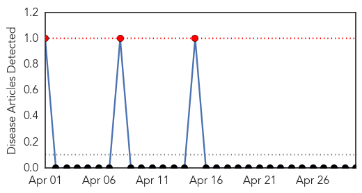
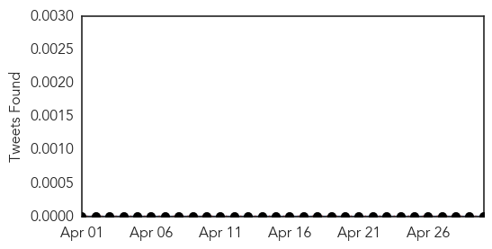
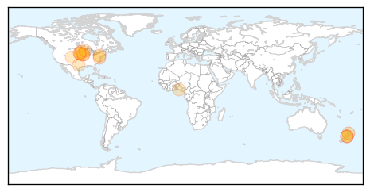
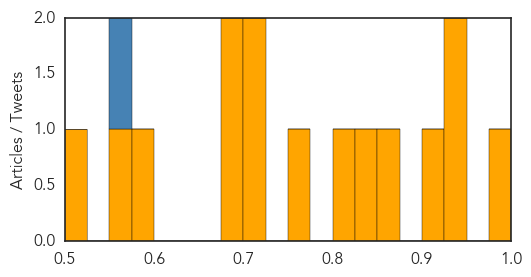

Mumps
30-Day Web Trend
3 alerts, 0 warnings

30-Day Twitter Trend
0 alerts, 0 warnings

Article Locations

Article Confidences

Top Articles:
-
No articles found for Apr 30, 2015
Top Tweets:
-
No tweets found for Apr 30, 2015
Influenza
30-Day Web Trend
2 alerts, 0 warnings

30-Day Twitter Trend
1 alerts, 0 warnings

Article Locations
Article Confidences
Top Articles:
- 0.993
- Southern DHB asking staff not to get or give the flu
- 0.930
- Animal facilities on high alert after Iowa dog flu case
- 0.926
- Māori fight back against influenza « LiveNews.co.nz
- 0.920
- Asthma Foundation Urge Everyone To Get A Flu Vaccine
- 0.869
- Dog flu could make its way to South Dakota
- 0.848
- Poultry producers should step up biosecurity
- 0.817
- Lawmakers urge USDA to tap into other resources to fight bird flu
- 0.751
- April 29, 2015 Archives
- 0.719
- ‘Benefits of immunization outweigh risk’
- 0.712
- Barron County officials address avian influenza concerns
- 0.685
- Colorado bird owners urged: Protect your poultry
- 0.676
- Rembrandt Foods egg farm could be largest hit by bird flu
- 0.586
- Lawmakers Urge USDA To Tap Into Other Resources To Fight Bird Flu
- 0.570
- PETA looks to erect bird flu billboard in Sioux City
- 0.501
- County declares State of Emergency over bird flu
Top Tweets:
- 0.878
- Update on H3N2 Canine Influenza (Dog Flu) Virus http://t.co/FxcbYRzPVS